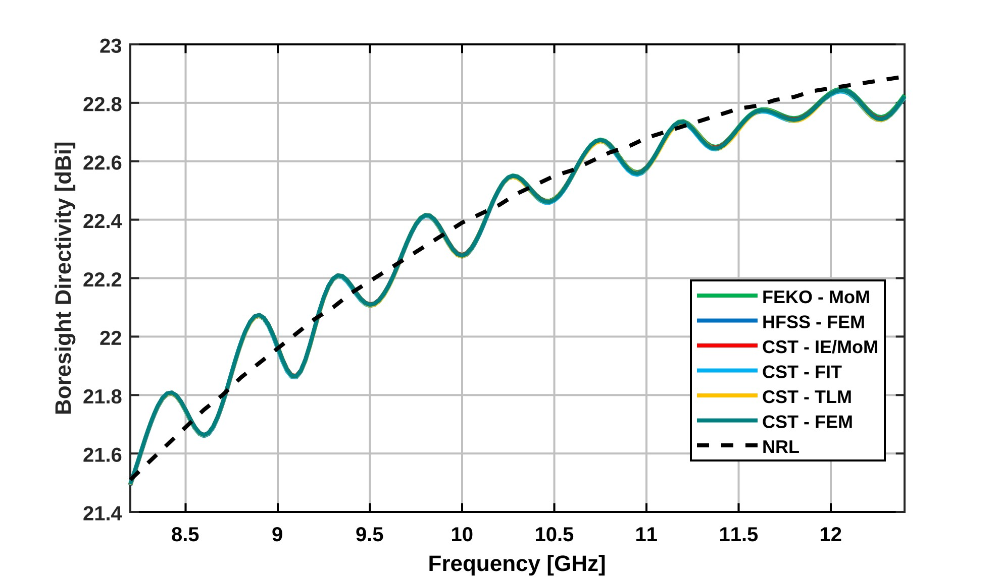
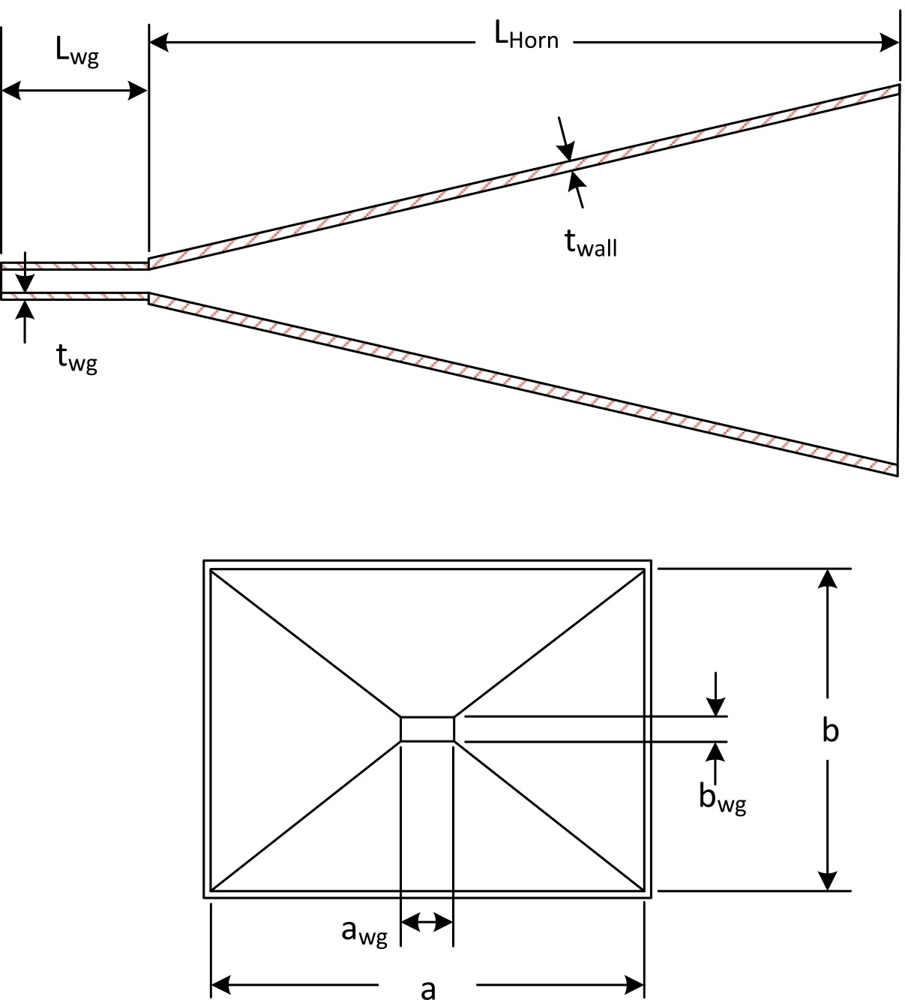
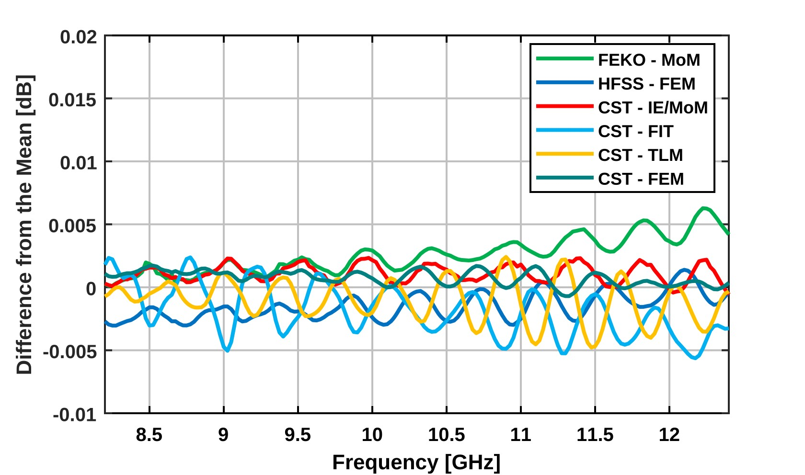
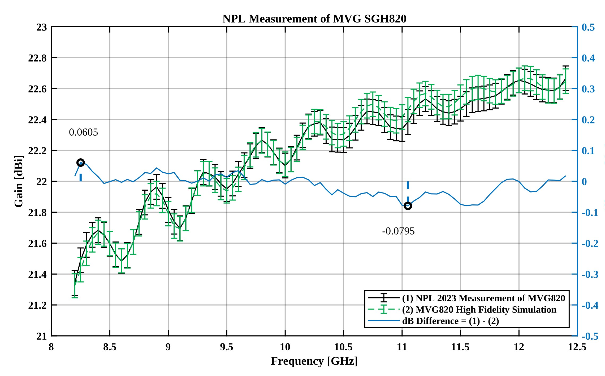

Almost every antenna gain number you have ever trusted traces back to a reference antenna. On most ranges that reference is a pyramidal standard gain horn, and its gain usually comes from a published curve. The common NRL curve (the Schelkunoff and Slayton approach) carries an uncertainty of about ±0.3 dB. On many ranges, that single term is one of the largest entries in the gain uncertainty budget.
Over the last few years I have worked with colleagues on a simple question: can full-wave simulation give us a better gain value for a real, off-the-shelf horn than the classic curve does? Here is what we found, and what it means for anyone comparing simulation against measured data.
Part 1: Do the solvers even agree?
Before you can use simulation as a reference, you have to know the solvers are not the weak link. In "Antenna Gain Calibration with Improved Accuracy Modeling of Pyramidal Standard Gain Horns" (AMTA Symposium, 2022), we modeled pyramidal standard gain horns in three commercial full-wave tools: HFSS, CST, and FEKO. The computed gains agreed with each other within ±0.0075 dB.
That number matters. It says that, for a well-defined geometry, three different numerical methods land on the same answer to better than a hundredth of a dB. If simulation and measurement later disagree by a tenth of a dB, the solver is not the first place to look.
The antenna in that study was one commercial off-the-shelf X-band horn, the Microwave Vision Group SGH820, with interior surfaces compliant to the NRL pyramidal dimensions. Every solver used the same interior geometry: a = 194.4 mm, b = 144.0 mm, le = 320.0 mm, and lh = 342.5 mm, with a 2 mm wall thickness at the aperture edges. The horn was modeled entirely as aluminum, and every tool used the same properties, taken from the HFSS materials library at 9.4 GHz: εr = 1, σe = 3.8 × 107 S/m, μr = 1.000021, and tan δμ = 0.

The three tool suites were not one method run three times. FEKO used a direct Method of Moments solution. HFSS used the finite element method. CST Studio Suite was run four ways: finite integration technique, transmission line method, Method of Moments, and finite elements. Each curve covers 8.2–12.4 GHz at a 25 MHz step, 169 frequencies, to capture the ripple of the curves. The setup followed IEEE Std 1597.1 and IEEE Std 1597.2 for validating computational electromagnetics: mesh convergence as a self-reference, and the intercomparison of independent codes as an external reference. Feature selective validation rated the simulations "Excellent" on the Validation Rating Scale. The paper's conclusion puts the solutions within ±0.0075 dB from an average curve.

There is a notable difference between the NRL gain curve and the CEM directivity results, especially at the higher frequencies, where the NRL gain curve overestimates the directivity. Conductor loss in the aluminum model is a much smaller term: the difference between directivity and IEEE gain falls between 0.006 and 0.012 dB. The abstract states the practical consequence directly. Based on the compiled results of multiple simulations and measurements, this simulation methodology could be applied to other models of commercial off-the-shelf standard gain horns to provide more accurate on-axis gain predictions.
Paper (IEEE Xplore): https://doi.org/10.23919/AMTA55213.2022.9954972
Part 2: Holding the model up against a calibrated measurement
Solver agreement only proves the solvers agree. The real test is hardware. In "Antenna Gain Calibration with Improved Accuracy Modeling of Pyramidal Standard Gain Horns, Part 2" (AMTA Symposium, 2024), where I was first author, we modeled a commercial off-the-shelf X-band horn covering 8.2 to 12.4 GHz and compared the simulated on-axis gain with measurements of that horn made by the UK's National Physical Laboratory (NPL) in 2023.
Three results stood out:
- Agreement within 0.08 dB (+0.06 / −0.08 dB) across the band. The supplier could not provide the SMA connector's dimensions, so a VNA measurement of the connector was folded into the simulation. NPL's 2023 measurement of the SGH820 itself carried a ±0.09 dB (2σ) uncertainty, so the model lands inside the measurement's own error bars.
- A build-tolerance study put error bars on the simulation itself. The simulation uncertainty is ±0.079 dB overall (build-tolerance study ±0.078 dB combined with ±0.0075 dB solver spread).
- Compared with the ±0.3 dB usually assigned to the NRL/Slayton curve, that is a meaningful reduction in one of the biggest terms in a gain budget.

The point is not that simulation replaces calibration. The point is that a carefully built model, with honest loss accounting and its own uncertainty, can be a credible reference and a strong cross-check on the measurement.
The 2025 follow-up
The work continued at the 2025 AMTA Symposium with "Modeling of Standard Gain Horns Using Advanced Electromagnetic Simulation Techniques" (AMTA Symposium, 2025), where I am a co-author. That paper modeled the same MVG SGH820 X-band (8–12 GHz) horn, with and without its waveguide adapter, using two full-wave solvers in Altair Feko: the Method of Moments (MoM) and the Multilevel Fast Multipole Method (MLFMM). The two solvers agreed within ±0.008 dB on boresight gain and directivity, and MLFMM cut computation time significantly with no loss of accuracy.
Paper (IEEE Xplore): https://doi.org/10.23919/AMTA66658.2025.11317872
How to make your sim match your range
Most sim versus measurement arguments I get pulled into come down to the same few items. Before you blame the solver, work through this list:
- Model the hardware you have, not the drawing. Measure the critical dimensions. At the hundredth-of-a-dB level, small flare and aperture differences show up. In the 2022 work, the collar around the horn aperture alone added 0.07 dB of gain (0.09 dB more directivity, 0.02 dB less radiation efficiency).
- Account for every loss in the path. Connectors, adapters, and waveguide transitions all cost something. The supplier could not provide the SMA connector's dimensions, so a VNA measurement of the connector was folded into the simulation.
- Compare the same quantity. Make sure you are comparing gain to gain, at the same reference plane, with the same definition (realized gain versus gain, for example).
- Converge on what you report. Check mesh convergence on gain itself, not just on S-parameters.
- Put error bars on the simulation. Run a tolerance study. If the model has no uncertainty, you cannot say whether it "agrees" with anything.
- Know your range's uncertainty budget. Find the biggest term. If it is the reference horn's gain, a better model may be the cheapest improvement you can make.
- Cross-check with a second solver when the stakes are high. If two methods agree and measurement does not, look hard at the setup.
Takeaway for engineering managers
When simulation and test data disagree, the instinct is often to buy another tool or schedule another test. In my experience the gap usually lives in the model, the loss accounting, or the measurement setup, not in the solver. Budget engineering time for loss characterization and simulation uncertainty, not just for software licenses. A model with honest error bars tells you when you can trust it. A model without them only tells you a number.
Want a second set of eyes?
If your simulated and measured antenna data do not agree, or you want to know whether your gain numbers will hold up, I offer a paid one-hour design review. Send me your sim and range data beforehand and we will work through where the gap is coming from.
Dom Belgiovane, PhD, is the founder of Vectron Technologies, an independent antenna and electromagnetics consultancy. He holds a PhD from The Ohio State University and is an AMTA Senior Member.